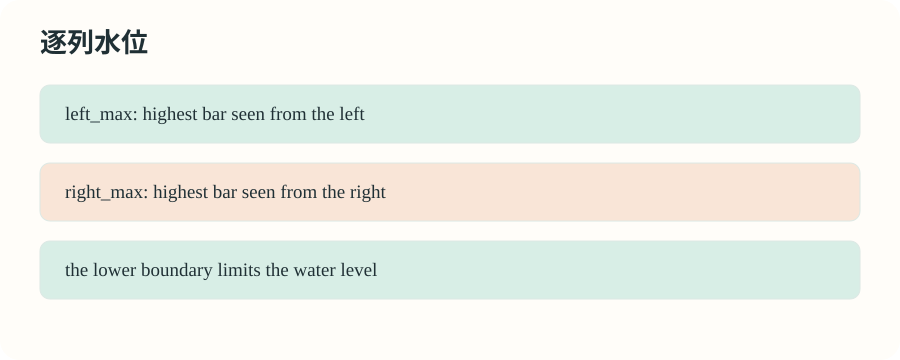
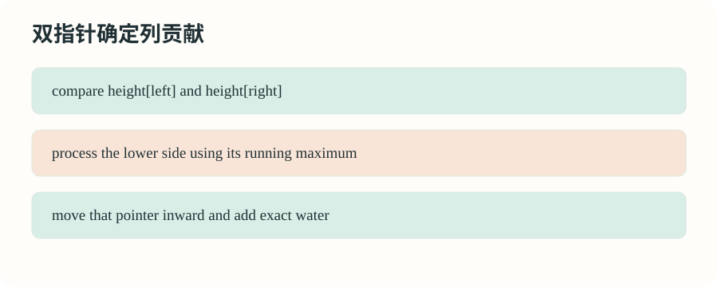
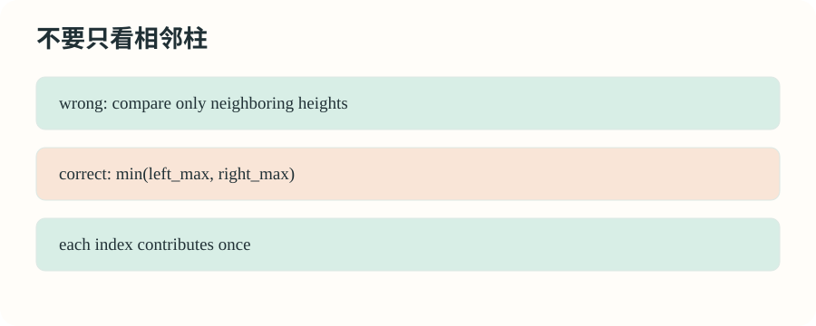

LEETCODE 42 / HARD / TWO POINTERS
接雨水
Trapping Rain Water · 给定宽度均为 1 的柱状高度图，计算下雨后能积存多少单位的水。例：[0,1,0,2,1,0,1,3,2,1,2,1] 的答案为 6。每个位置的水位由左侧最高边界和右侧最高边界中的较小者决定。
01 · 从逐列扫描到双指针
对每个位置 i，扫描左右找到 left_max 和 right_max，水量为 max(0,min(left_max,right_max)-height[i])，但逐列扫描最坏 O(n²)。预计算左右最大值数组可降为 O(n)，但使用 O(n) 空间。这里用两个端点和两个运行最大值做到 O(1) 辅助空间。
02 · 状态与不变量
left_max 和 right_max 分别记录已扫描左右部分的最高柱。每轮比较当前两端高度，处理较低的一侧：若左端不高于右端，右端至少提供一个不低于左端的边界，左端这一列的贡献可以由 left_max 确定；反之对称处理右端。每轮至少推进一个指针。

03 · 关键步骤交互

步骤 1 / 4
初始化
left=0，right=11；left_max=right_max=0。
未处理区间由两个端点包围。
当前第 1 步
04 · 正确性证明
考虑当前较低的端点。若 height[left] ≤ height[right]，右端当前柱就是一个不低于左端的有效右边界；因此左端位置的限制水位由其左侧历史最大值与该右边界共同确定，而不会被尚未扫描的内部柱进一步降低。更新 left_max 后即可精确累计该列。右端较低时完全对称。每次只处理一个已确定的端点，指针最终相遇，所有列恰好处理一次。
05 · Python 实现
class Solution:
def trap(self, height: list[int]) -> int:
left, right = 0, len(height) - 1
left_max = right_max = 0
water = 0
while left < right:
if height[left] <= height[right]:
left_max = max(left_max, height[left])
water += left_max - height[left]
left += 1
else:
right_max = max(right_max, height[right])
water += right_max - height[right]
right -= 1
return water时间 O(n)：每轮至少移动一个指针。辅助空间 O(1)：两个索引、两个最大值和累计和。
06 · 易错点
不要把接雨水与盛最多水的容器混淆：本题累加每一列，后者只选两根柱子。水位不是相邻柱高度，而是 min(left_max,right_max)。单调递增、单调递减、全零和两端高峰都是重要边界。
